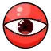

幻造·第三只眼
掌控心灵！

- 幻造·第三只眼是一种模组专属通用装备。
-
隔热240，移速加成10%，防水100%
说明-装备特性：
【读心】：装备时，不会受到发情的牛与猎犬主动攻击；
【心花】：装备时，每秒为自身与周围16范围内的玩家恢复0.5精神值与0.2生命值；
【境界】：装备者造成伤害时，额外再附带5点真实伤害；
【恐怖回忆】：【境界】触发时，有34%概率再对目标造成其最大生命值0.05%的真实伤害，并恐惧目标及其周围5范围内的生物5秒；被攻击时，立刻以100%概率对攻击者触发【恐怖回忆】；
【刺痛之心】：右键物品可在“开眼”“闭眼”状态之间切换，“闭眼”状态下使【心花】【境界】【恐怖回忆】失效，并触发【被厌恶者的哲学】【胎儿之梦】【地底蔷薇】；
幻造·第三只眼（开眼）

分类：装备/头部
解锁方式：完整的远古伪科技站
制作材料：
①巨鹿眼球*1
②铥矿*10
③纯粹恐惧*10
-
隔热240，移速加成10%，防水100%
说明-装备特性：
【被厌恶者的哲学】：进入隐身状态，期间每0.5秒消耗2.5精神值（不足则消耗1.25生命值），不会主动引起生物仇恨，已拥有的生物仇恨将快速消失；
【胎儿之梦】：附近16范围内处于睡眠状态的生物每0.5秒有5%概率受到等同于其自身攻击力5倍的真实伤害；
【地底蔷薇】：攻击力+34%，减伤率+34%，移速加成变为100%。
幻造·第三只眼（闭眼）
分类：装备/头部
解锁方式：无法解锁
制作材料：无法制作